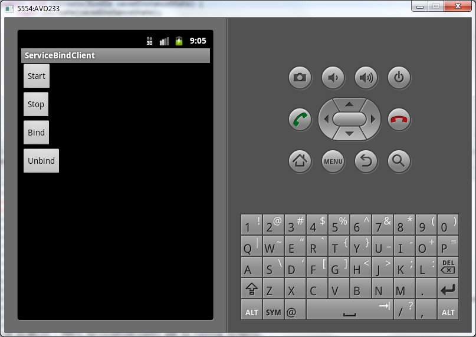
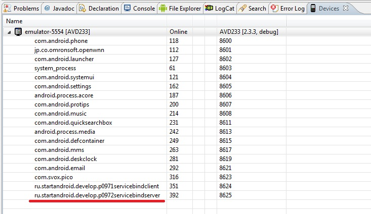

В этом уроке:
- используем биндинг для подключения к сервису
В прошлых уроках мы общались с сервисом асинхронно. Т.е. мы отправляли запрос через startService, а ответ нам приходил когда-нибудь потом посредством PendingIntent или BroadcastReceiver.
Но есть и синхронный способ взаимодействия с сервисом. Он достигается с помощью биндинга (binding, я также буду использовать слово «подключение»). Мы подключаемся к сервису и можем взаимодействовать с ним путем обычного вызова методов с передачей данных и получением результатов. В этом уроке передавать данные не будем. Пока что разберемся, как подключаться и отключаться.
Как вы помните, для запуска и остановки сервиса мы использовали методы startService и stopService. Для биндинга используются методы bindService и unbindService.
Создадим два Application. В одном будет приложение, в другом сервис.
Создадим первый проект:
Project name: P0971_ServiceBindClient
Build Target: Android 4.0
Application name: ServiceBindClient
Package name: ru.startandroid.develop.p0971servicebindclient
Create Activity: MainActivity
Добавим в strings.xml строки:
<string name="start">Start</string>
<string name="stop">Stop</string>
<string name="bind">Bind</string>
<string name="unbind">Unbind</string>Экран main.xml:
<?xml version="1.0" encoding="utf-8"?>
<LinearLayout
xmlns:android="http://schemas.android.com/apk/res/android"
android:layout_width="fill_parent"
android:layout_height="fill_parent"
android:orientation="vertical">
<Button
android:id="@+id/btnStart"
android:layout_width="wrap_content"
android:layout_height="wrap_content"
android:onClick="onClickStart"
android:text="@string/start">
</Button>
<Button
android:id="@+id/btnStop"
android:layout_width="wrap_content"
android:layout_height="wrap_content"
android:onClick="onClickStop"
android:text="@string/stop">
</Button>
<Button
android:id="@+id/btnBind"
android:layout_width="wrap_content"
android:layout_height="wrap_content"
android:onClick="onClickBind"
android:text="@string/bind">
</Button>
<Button
android:id="@+id/btnUnBind"
android:layout_width="wrap_content"
android:layout_height="wrap_content"
android:onClick="onClickUnBind"
android:text="@string/unbind">
</Button>
</LinearLayout>4 кнопки: для запуска, остановки и биндинга сервиса
MainActivity.java:
package ru.startandroid.develop.p0971servicebindclient;
import android.app.Activity;
import android.content.ComponentName;
import android.content.Intent;
import android.content.ServiceConnection;
import android.os.Bundle;
import android.os.IBinder;
import android.util.Log;
import android.view.View;
public class MainActivity extends Activity {
final String LOG_TAG = "myLogs";
boolean bound = false;
ServiceConnection sConn;
Intent intent;
/** Called when the activity is first created. */
public void onCreate(Bundle savedInstanceState) {
super.onCreate(savedInstanceState);
setContentView(R.layout.main);
intent = new Intent("ru.startandroid.develop.p0972servicebindserver.MyService");
sConn = new ServiceConnection() {
public void onServiceConnected(ComponentName name, IBinder binder) {
Log.d(LOG_TAG, "MainActivity onServiceConnected");
bound = true;
}
public void onServiceDisconnected(ComponentName name) {
Log.d(LOG_TAG, "MainActivity onServiceDisconnected");
bound = false;
}
};
}
public void onClickStart(View v) {
startService(intent);
}
public void onClickStop(View v) {
stopService(intent);
}
public void onClickBind(View v) {
bindService(intent, sConn, BIND_AUTO_CREATE);
}
public void onClickUnBind(View v) {
if (!bound) return;
unbindService(sConn);
bound = false;
}
protected void onDestroy() {
super.onDestroy();
onClickUnBind(null);
}
}В onCreate мы создаем Intent, который позволит нам добраться до сервиса.
Объект ServiceConnection позволит нам определить, когда мы подключились к сервису и когда связь с сервисом потеряна (если сервис был убит системой при нехватке памяти). При подключении к сервису сработает метод onServiceConnected. На вход он получает имя компонента-сервиса и объект Binder для взаимодействия с сервисом. В этом уроке мы этим Binder пока не пользуемся. При потере связи сработает метод onServiceDisconnected.
Переменную bound мы используем для того, чтобы знать – подключены мы в данный момент к сервису или нет. Соответственно при подключении мы переводим ее в true, а при потере связи в false.
Далее идут обработчики кнопок. В onClickStart мы стартуем сервис, в onClickStop – останавливаем.
В onClickBind – соединяемся с сервисом, используя метод bindService. На вход передаем Intent, ServiceConnection и флаг BIND_AUTO_CREATE, означающий, что, если сервис, к которому мы пытаемся подключиться, не работает, то он будет запущен.
В onClickUnBind с помощью bound проверяем, что соединение уже установлено. Далее отсоединяемся методом unbindService, на вход передавая ему ServiceConnection. И в bound пишем false, т.к. мы сами разорвали соединение. Метод onServiceDisconnected не сработает при явном отключении.
Создадим второй проект, без Activity:
Project name: P0972_ServiceBindServer
Build Target: Android 4.0
Application name: ServiceBindServer
Package name: ru.startandroid.develop.p0972servicebindserver
Создаем сервис MyService.java:
package ru.startandroid.develop.p0972servicebindserver;
import android.app.Service;
import android.content.Intent;
import android.os.Binder;
import android.os.IBinder;
import android.util.Log;
public class MyService extends Service {
final String LOG_TAG = "myLogs";
public void onCreate() {
super.onCreate();
Log.d(LOG_TAG, "MyService onCreate");
}
public IBinder onBind(Intent intent) {
Log.d(LOG_TAG, "MyService onBind");
return new Binder();
}
public void onRebind(Intent intent) {
super.onRebind(intent);
Log.d(LOG_TAG, "MyService onRebind");
}
public boolean onUnbind(Intent intent) {
Log.d(LOG_TAG, "MyService onUnbind");
return super.onUnbind(intent);
}
public void onDestroy() {
super.onDestroy();
Log.d(LOG_TAG, "MyService onDestroy");
}
}Методы onCreate и onDestroy нам знакомы – они вызываются при создании и уничтожении сервиса. А onBind, onRebind и onUnbind используются при биндинге и мы далее будем смотреть как именно. Метод onStartCommand не используем.
В методе onBind возвращаем пока объект-заглушку Binder. В этом уроке он не будет использован.
Прописываем сервис в манифесте и настраиваем для него IntentFilter с Action = ru.startandroid.develop.p0972servicebindserver.MyService.
Все сохраняем, инсталлим сервис и запускаем приложение.

На самом экране ничего происходить не будет. Все внимание на логи.
Попробуем подключиться к неработающему сервису. Жмем Bind. В логах:
MyService onCreate
MyService onBind
MainActivity onServiceConnected
Сервис создался и сработал его метод onBind. Также сработал метод onServiceConnected в ServiceConnection, т.е. Activity теперь знает, что подключение к сервису установлено.
Попробуем отключиться. Жмем Unbind.
MyService onUnbind
MyService onDestroy
Сработал метод Unbind в сервисе и сервис закрылся. Т.е. если мы биндингом запустили сервис, он будет жить, пока живет соединение. Как только мы отключаемся, сервис останавливается. onServiceDisconnected не сработал, т.к. мы сами отключились.
Теперь попробуем соединиться с сервисом и убить его. Посмотрим, что станет с соединением. Жмем Bind.
MyService onCreate
MyService onBind
MainActivity onServiceConnected
Подключились.
Теперь в процессах убиваем процесс сервиса

Смотрим лог:
MainActivity onServiceDisconnected
Сработал метод onServiceDisconnected объекта ServiceConnection. Тем самым Activity уведомлено, что соединение разорвано.
Теперь немного подождем (у меня это заняло 5 секунд) и в логах появляются строки:
MyService onCreate
MyService onBind
MainActivity onServiceConnected
Сервис запустился и соединение восстановилось. Очень удобно.
Жмем Unbind и отключаемся.
Попробуем снова подключиться к незапущенному сервису, но уже без флага BIND_AUTO_CREATE. Перепишем onClickBind в MainActivity.java:
public void onClickBind(View v) {
bindService(intent, sConn, 0);
}Вместо флага BIND_AUTO_CREATE мы написали 0.
Сохраняем, запускаем. Жмем Bind. В логах ничего. Мы убрали флаг, сервис сам не создается при подключении.
Давайте запустим его методом startService. Жмем Start. В логах:
MyService onCreate
MyService onBind
MainActivity onServiceConnected
Сервис создался и приложение подключилось к нему. Т.е. попыткой биндинга мы оставили некую «заявку» на подключение, и когда сервис был запущен методом startService, он эту заявку увидел и принял подключение.
Жмем UnBind.
MyService onUnbind
Отключились от сервиса. Но сервис продолжает жить, потому что он был запущен не биндингом, а методом startService. А там уже свои правила закрытия сервиса. Это мы проходили в прошлых уроках.
Жмем Stop.
MyService onDestroy
Сервис завершил работу.
Попробуем запустить сервис методом startService и, пока он работает, несколько раз подключимся и отключимся. Жмем Start.
MyService onCreate
Сервис запущен.
Подключаемся и отключаемся, т.е. жмем Bind
MyService onBind
MainActivity onServiceConnected
а затем Unbind.
MyService onUnbind
Сработали методы onBind и onUnbind в сервисе, и onServiceConnected в ServiceConnection.
Еще раз подключаемся и отключаемся - жмем Bind, а затем Unbind
MainActivity onServiceConnected
При повторном подключении к сервису методы onBind и onUnbind не сработали. Только onServiceConnected.
И далее, сколько бы мы не подключались, так и будет.
Остановим сервис – нажмем Stop.
Это поведение можно скорректировать. Для этого необходимо возвращать true в методе onUnbind. Сейчас мы там вызываем метод супер-класса, а он возвращает false.
Перепишем метод Unbind в MyService.java:
public boolean onUnbind(Intent intent) {
Log.d(LOG_TAG, "MyService onUnbind");
return true;
}Сохраним и инсталлим сервис. Жмем Start, а затем жмем поочередно Bind и Unbind, т.е. подключаемся и отключаемся. Смотрим логи:
MyService onCreate
MyService onBind
MainActivity onServiceConnected
MyService onUnbind
Сервис создан, подключились и отключились. Продолжаем подключаться и отключаться.
MyService onRebind
MainActivity onServiceConnected
MyService onUnbind
MyService onRebind
MainActivity onServiceConnected
MyService onUnbind
Последующие подключения и отключения сопровождаются вызовами методов onRebind и onUnbind. Таким образом, у нас есть возможность обработать в сервисе каждое повторное подключение/отключение.
Вот примерно такой Lifecycle имеет биндинг сервиса. Разумеется, я рассмотрел не все возможные комбинации запуска методов startService, stopService, bindService и unbindService. Оставляю это вам, если есть интерес. Я рассмотрел только типичные случаи.
Также я не рассматривал возможность одновременного подключения нескольких приложений или сервисов к одному сервису. А такая возможность существует. В этом случае, если сервис запущен биндингом, то он будет жить, пока не отключатся все подключившиеся.
Насколько я понял по документацие, не рекомендуется оставлять незавершенные подключения к сервисам по окончании работы приложения. В примерах из документации подключение к сервису производится в методе onStart, а отключение - в onStop. Но, разумеется, если вам надо, чтобы подключение оставалось при временном уходе Activity в background, то используйте onCreate и onDestroy. Также есть четкая рекомендация от Google - не использовать для этих целей onResume и onPause.